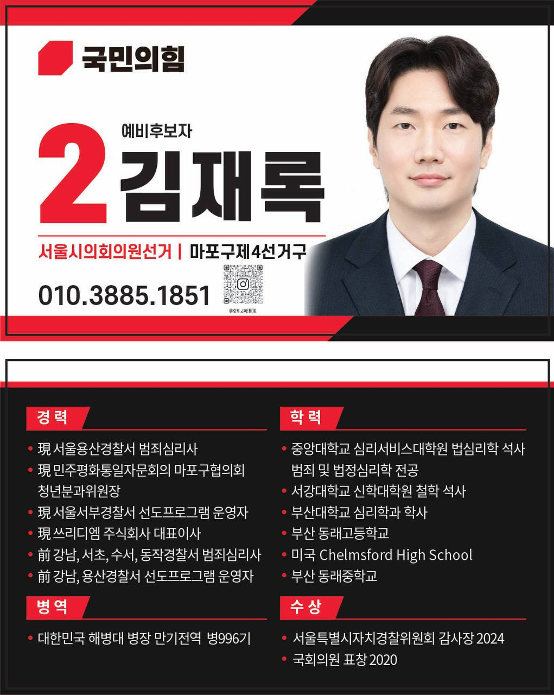
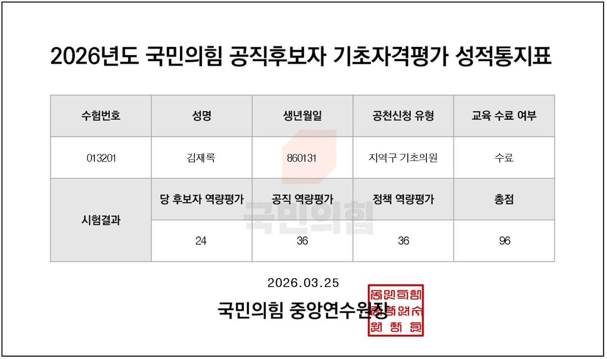

6월 3일 제9회 전국동시지방선거를 앞두고, 국민의힘 공천에서 두 번의 탈락을 경험한 김재록 정치신인을 만났다. 기초의원 나선거구 공천 탈락 후 광역의원 마포구제4선거구에서 추가 공천 모집에 지원했으나 또 탈락했다. 범죄심리사이자 철학 석사, 카타로스 발행인인 그가 정치신인으로서 느낀 배움과 향후 계획을 담담하게 이야기했다.
인터뷰이: 김재록 범죄심리사, 정치신인
약력: 용산경찰서 범죄심리사, 민주평화통일자문회의 청년분과위원장, 쓰리디엠 주식회사 대표이사
학력: 서강대학교 신학대학원 철학 석사, 중앙대학교 심리서비스대학원 범죄및법정심리학 석사
일시: 2026년 5월 10일
장소: 서울 마포구 지역 사무실
Q. 먼저 기초의원 나선거구 공천에 도전했는데 탈락하셨고, 이후 광역의원 마포구제4선거구 공천 모집에도 지원하셨다고요?
"그렇습니다. 처음 기초의원 나선거구 공천에 떨어졌을 때는 솔직히 아쉬웠지만, 완전히 후회한다기보다는 '더 배울 점이 있구나'라는 생각을 했습니다. 그래서 광역의원 마포구제4선거구에서 추가 공천 모집이 있다는 소식을 들었을 때, 상암 소각장 현대화 정책을 더 추진하고 싶다는 마음으로 다시 지원했습니다. 하지만 결과는 다시 탈락이었습니다."
Q. 예비후보 등록 과정에서는 어떤 경험을 하셨나요?
"선거관리위원회를 여러 번 찾아갔습니다. 예비후보 등록 절차를 물어보고, 필요한 서류가 무엇인지 확인하고, 실제 등록하는 과정까지 말이에요. 선관위 직원분들이 정말 친절했습니다. 늘 정중하게 설명해 주시고, 제가 헷갈리는 부분을 자세히 알려주셨습니다. 정치 신인으로서 그런 배려가 얼마나 큰 도움이 되었는지 모릅니다.
그 이후 예비후보자 명함을 만들어서 마포 구민분들에게 인사하며 다니기 시작했습니다. 처음에는 정말 불안했어요. '나 같은 신인이 대선 수행 경험 있는 기성 정치인과 경쟁할 수 있을까' 하는 생각도 들었고요. 하지만 거리에서 구민분들을 만나면서 조금이라도 이름을 알릴 수 있었던 것이 감사합니다. 아무것도 기대하지 않고 시작했는데, 인사를 나누고 구민분들의 이야기를 들으면서 의외로 마포 지역의 목소리와 바램이 무엇인지 배울 수 있었거든요."

김재록 예비후보자 명함 및 홍보 포스터
국민의힘 마포구제4선거구 서울시의회의원 예비후보 (기호 2번) | 연락처 010-3885-1851
Q. 두 번의 탈락을 어떻게 받아들이고 계신가요?
"처음부터 될 거라고 생각하지도 않았습니다. 솔직히 말하면, 공천을 받으면 정말 다행이겠다는 정도였어요. 정치는 저의 개인적 욕심만으로 하는 것이 아니라는 것을 배웠습니다. 당의 전략, 지역의 정치 지형, 유권자들의 다양한 의견들이 공천 과정에 작용합니다. 두 번의 탈락은 제가 정치신인으로서 부족한 부분들을 깨닫는 기회였습니다. 특히 국민의힘에서 진행한 공직후보자 기초자격평가(PPAT)에서 96점이라는 결과를 받았는데, 시험을 준비하는 과정에서 정말 많은 것을 배울 수 있었고 그 자체로 즐거웠습니다."
Q. PPAT 시험은 어떤 과정이었나요?
"공직후보자 기초자격평가는 당 후보자 역량평가, 공직 역량평가, 정책 역량평가 이렇게 세 부분으로 나뉘어 있습니다. 저는 당헌·당규, 헌법, 공직선거법, 공직윤리, 외교안보, 대북정책, 과학기술정책, 보수정부 역사 등 8개 분야를 준비했습니다.
각 분야를 공부하면서 대한민국 현대사와 정치 이념, 법체계에 대해 깊이 있게 이해할 수 있었습니다. 특히 대북정책과 외교안보 부분에서는 국제 정세를 이해하는 재미를 느꼈고, 공직윤리를 공부하면서는 '정치인이 가져야 할 기본 자세'가 무엇인지 다시 한 번 생각해볼 수 있었습니다. 시험 준비 자체가 저를 더 나은 정치신인으로 성장시켰다고 느낍니다."

국민의힘 공직후보자 기초자격평가(PPAT) 성적통지표 (2026.03.25 발급)
당 후보자 역량평가 24점, 공직 역량평가 36점, 정책 역량평가 36점 | 총점 96점
Q. 공천 과정에서 당협면접, 서울시당 면접 등을 거치셨다고요?
"네, 각 단계마다 여러 면접관들을 만났습니다. 당협면접에서는 지역 현안과 정책 비전을 설명했고, 서울시당 면접에서는 더 광범위한 도시 정책과 당의 방향에 대해 물어봤습니다. 매 단계마다 새로운 질문들을 받으면서 제 생각을 더 정리할 수 있었습니다. 면접관들의 지적과 피드백이 저를 더 겸손하고 신중하게 만들었습니다. 비록 최종 공천으로 이어지지는 않았지만, 이 과정 자체가 정치신인으로서 정말 귀중한 경험이 되었습니다."
Q. 선거에 출마하게 되면 전과 전력이 공개될 텐데, 그에 대한 부담은 없으신가요?
"솔직하게 말씀드리겠습니다. 부담이 없다면 거짓이겠죠. 선거 과정에서 제 과거가 지적될 수도 있고, 유권자분들께 지탄을 받을 수도 있습니다. 하지만 정치인이 과거를 숨기면서 투명성을 말할 수 없다고 생각했습니다. 부담을 안고도 당당하게 마주해야 한다고 생각합니다.
중요한 것은 제 과거의 모든 사건이 술과 관련이 있었다는 것입니다. 만약 마지막 사건에서 술을 마시지 않았다면, 충분히 합리적이고 이성적으로 문제를 해결했을 것이고, 형사사건으로까지 만들지 않았을 가능성이 높습니다. 술이 판단력을 빼앗아갔던 거죠.
그 깨달음이 제가 10년을 술 없이 살아가게 만들었고, 오랫동안 숨겨온 것들을 인정하고 드러내니 정말 가슴이 편해졌습니다. 속이 시원했어요. 부담스럽지만, 과거를 외면하지 않고 마주하는 것이 진정한 반성이라고 생각합니다."
Q. 술을 끊으신 과정을 말씀해 주시겠어요?
"약 10년 전 마지막 사건 이후, 제 삶을 완전히 바꾸기로 결심했습니다. 처음 3년은 술을 서서히 줄여나갔어요. 한 번에 끊기는 어려우니까 조금씩 조금씩 줄여가며 제 몸과 마음을 준비시켰죠. 그 다음 7년간은 술을 아예 입에도 대지 않았습니다.
이 과정이 제게 가장 큰 교훈이 됐습니다. 과거의 실수를 단순히 후회하는 것이 아니라, 몸으로 실천하며 증명해야 한다는 것을 배웠거든요. 10년 동안 술을 끊으면서 느낀 것은, 진정한 반성은 시간과 실천이 필요하다는 것입니다. 그리고 그 시간들이 저를 더 단단한 사람으로 만들어 줬습니다. 이제 제 과거를 인정하고 드러낼 수 있는 용기를 얻게 된 거죠."
Q. 상암 소각장 '코펜힐 프로젝트'는 여전히 중요한 의제인가요?
"물론입니다. 오히려 더 중요해졌다고 봅니다. 2026년 1월 수도권 직매립 전면 금지가 시행되었고, 마포자원회수시설의 역할은 더욱 커졌습니다. 현재 시설은 1994년에 준공된 노후 시설이고, 주민들의 환경 문제 우려도 높습니다. 이를 단순히 '반대한다'가 아니라 '어떻게 현대화할 것인가'라는 미래 지향적 질문으로 접근해야 합니다. 덴마크 코펜힐, 스웨덴 말뫼, 일본 도쿄 사례처럼 환경과 시민의 삶의 질을 모두 고려하는 방식이 필요합니다."
Q. 범죄심리사로서 정치 활동을 어떻게 보셨나요?
"범죄심리학을 연구하다 보면, 개인의 행동 뒤에는 항상 사회적 맥락이 있다는 것을 알게 됩니다. 정치도 마찬가지입니다. 지역의 갈등도 단순한 '감정의 충돌'이 아니라, 신뢰의 부재, 소통의 단절에서 비롯됩니다. 저는 심리학적 관점에서 지역 사회의 신뢰를 회복하고 싶었습니다. 두 번의 탈락을 거치면서 그 마음은 변하지 않았습니다."
Q. 철학 석사(막스 슈티르너)라는 배경이 도움이 되었나요?
"슈티르너의 '유일자' 개념은 개인이 자신의 선택에 책임을 진다는 것을 의미합니다. 저는 이 두 번의 탈락도 '제가 스스로 선택한 정치 활동의 결과'로 봅니다. 당의 공천 과정을 존중하고, 그 결과에 책임을 지는 것이 성숙한 정치인의 자세라고 생각합니다. 후회하지 않습니다. 다만 배움을 이어가고 싶습니다."
Q. 앞으로는 어떤 활동을 하실 계획이신가요?
"이제부터가 정치의 시작이라고 생각합니다. 공천은 떨어졌지만, 정치신인으로서의 열정과 지역을 위한 마음은 더욱 불타고 있습니다. 무소속 출마, 시민운동, 당과의 재협력 등 여러 경로를 검토하고 있습니다. 중요한 것은 상암 소각장 문제와 지역의 미래가 외면받지 않는 것입니다. 이것이 선거 공약으로 남든, 시민 운동으로 진행되든, 제 역할은 계속될 것입니다. 또한 카타로스를 통해 지역과 국정 현안에 대한 전문적인 기사와 칼럼을 계속 제공하려고 합니다. 이번 경험이 저를 더 강하고 현명한 정치인으로 만들어 줄 것이라고 확신합니다."
Q. 마지막으로 마포 주민들에게 하고 싶은 말씀이 있으신가요?
"제가 공천에 탈락했다는 사실이 상암 소각장 현대화의 필요성을 없애지는 않습니다. 오히려 이것은 개별 정치인의 문제가 아니라, 마포 지역 전체의 과제입니다. 거리에서 만난 구민분들의 목소리를 절대 잊지 않겠습니다. 어떤 후보가 당선되든, 이 문제를 진지하게 다룰 수 있는 의원을 선택해 주시기를 바랍니다. 그리고 6월 3일 투표에서 유권자분들의 현명한 선택이 마포의 미래를 결정할 것이라고 생각합니다. 저는 정치신인으로서 이번 경험을 통해 더 성장할 것이고, 마포를 위해 계속 도전하겠습니다."
인터뷰 후기
두 번의 공천 탈락이라는 정치적 도전을 겪으면서도 김재록은 담담한 태도를 유지했다. 선거관리위원회를 찾아다니며 절차를 배우고, 예비후보자 명함을 들고 거리에서 구민을 만나며 정치를 배웠다. PPAT 시험 준비를 통해 대한민국 정치와 법체계를 깊이 있게 공부했고, 그 과정 자체를 재미있어했다. 무엇보다 전과를 공개하면서 부담 속에서도 과거를 마주하고, 10년의 술 끊기로 진정한 반성을 실천해온 모습이 인상적이었다. 범죄심리사, 철학자, 기업가라는 다양한 정체성을 가진 그가 추구하는 것은 결국 '지역 신뢰의 회복'이었다. "이제부터가 정치의 시작"이라는 그의 말에서 정치신인으로서의 순수한 열정과 과거를 딛고 선 성숙함이 함께 느껴진다. 6월 3일 지방선거 이후 그의 정치적 여정이 마포 지역에 어떤 변화를 가져올지 지켜볼 가치가 있다.